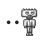
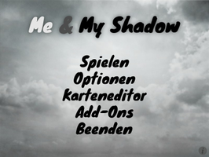
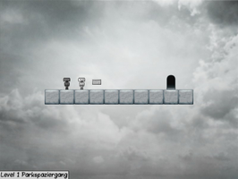
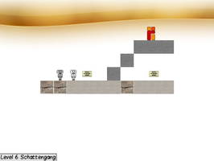
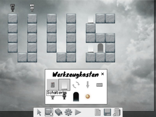

Me and My Shadow
Dieser Artikel wurde für die folgenden Ubuntu-Versionen getestet:
Ubuntu 14.04 Trusty Tahr
Zum Verständnis dieses Artikels sind folgende Seiten hilfreich:
 Me & My Shadow ist ein Jump ’n’ Run-Spiel mit Rätselelementen. Der Spieler muss mit der Spielfigur in 40 Leveln das Tor erreichen. Um dieses Ziel zu erreichen, muss man Abgründe überwinden, Felsvorsprünge erklimmen, Rätsel lösen und zur Lösung der Level mit dem eigenen Schatten zusammenarbeiten. Aber der Schatten der Spielfigur kann nur bestimmte Materialien benutzen...
Der integrierte Karteneditor erlaubt es, eigene Kreationen zu erstellen.
|  |  |
| Menü | Spielszene |
Installation¶
Binärpaket¶
Das Spiel benötigt die folgenden Pakete [1]:
libarchive13
libcurl3
libsdl-gfx1.2 (universe)
libsdl-image1.2 (universe)
libsdl-mixer1.2 (universe)
libsdl-ttf2.0-0 (universe)
libssl0.9.8 (universe)
 mit apturl
mit apturl
Paketliste zum Kopieren:
sudo apt-get install libarchive13 libcurl3 libsdl-gfx1.2 libsdl-image1.2 libsdl-mixer1.2 libsdl-ttf2.0-0 libssl0.9.8
sudo aptitude install libarchive13 libcurl3 libsdl-gfx1.2 libsdl-image1.2 libsdl-mixer1.2 libsdl-ttf2.0-0 libssl0.9.8
Nun das aktuelle Binärpaket 
 herunterladen und entpacken [2], z.B. nach ~/Spiele. Über
herunterladen und entpacken [2], z.B. nach ~/Spiele. Über run_game.sh kann das Spiel aus dem Installationsverzeichnis heraus gestartet [5] werden. Auf Wunsch einen Menüeintrag [6] vornehmen.
Quellcode¶
Um den Quellcode zu übersetzen, ist die Installation der folgenden Pakete notwendig [1]:
build-essential
checkinstall (universe)
cmake
libarchive13
libarchive-dev
libcurl3
libsdl-gfx1.2 (universe)
libsdl-gfx1.2-dev (universe)
libsdl-image1.2 (universe)
libsdl-image1.2-dev (universe)
libsdl-mixer1.2 (universe)
libsdl-mixer1.2-dev (universe)
libsdl-ttf2.0-0 (universe)
libsdl-ttf2.0-dev (universe)
libssl0.9.8 (universe)
mit apturl
Paketliste zum Kopieren:
sudo apt-get install build-essential checkinstall cmake libarchive13 libarchive-dev libcurl3 libsdl-gfx1.2 libsdl-gfx1.2-dev libsdl-image1.2 libsdl-image1.2-dev libsdl-mixer1.2 libsdl-mixer1.2-dev libsdl-ttf2.0-0 libsdl-ttf2.0-dev libssl0.9.8
sudo aptitude install build-essential checkinstall cmake libarchive13 libarchive-dev libcurl3 libsdl-gfx1.2 libsdl-gfx1.2-dev libsdl-image1.2 libsdl-image1.2-dev libsdl-mixer1.2 libsdl-mixer1.2-dev libsdl-ttf2.0-0 libsdl-ttf2.0-dev libssl0.9.8
Kompiliervorgang¶
Als erstes den Quellcode von der Projektseite herunterladen und das Archiv entpacken [2]. Im nächsten Schritt den Code übersetzen [3][4]:
cmake . make sudo checkinstall
Über meandmyshadow kann das Spiel aus dem Verzeichnis heraus gestartet [5] werden. Alternativ über "Spiele → Me and My Shadow" im Menü aufrufen.
Hinweis:
Um ohne OpenGL-Unterstützung zu kompilieren, verwendet man stattdessen cmake -DHARDWARE_ACCELERATION=OFF . - der Spielaufruf erfolgt dann über meandmyshadow -set gl 0.
Bedienung¶
Das Menü ist übersichtlich gestaltet.
| Menü | |
| Menüpunkt | Beschreibung |
| "Spielen" | Spiel starten. In der Levelauswahl kann man am oberen Rand mit den Pfeilen durch die Auswahl navigieren. Neben den Eigenkreationen stehen die 24 Level der ersten Ausgabe ("classic"), 19 Level der aktuellen Veröffentlichung ("default") und 25 Level des Tutorials zur Verfügung. |
| "Optionen" | Einstellungen an der Auflösung, Vollbild-/Fenstermodus, Sprache, Tastenkonfiguration etc. vornehmen. |
| "Karteneditor" | Eigene Level erstellen. |
| "Add-Ons" | Erweiterungen wie Levels, Levelsamlungen und Themen auswählen. |
| "Beenden" | Spiel verlassen. |
|  |
| Theme |
Erweiterungen¶
Mit Addons kann die Funktionalität erweitert und das Aussehen angepasst werden. Die Seite befindet sich noch im Aufbau - daher kann dort noch nichts heruntergeladen werden.
|  |
| Karteneditor |
Karteneditor¶
Mit dem integrierten Editor können eigene Level kreiert werden. Diese werden im Homeverzeichnis unter ~/.local/share/meandmyshadow/custom/ abgespeichert. Der Karteneditor wird über das Hauptmenü des Spiels aufgerufen. Mit der  linken Maustaste können die Objekte gesetzt/entfernt werden - je nach gewählter Schaltfläche.
linken Maustaste können die Objekte gesetzt/entfernt werden - je nach gewählter Schaltfläche.
| Karteneditor | |
| Taste(n) | Funktion |
| Tab ⇆ | Einstellungen |
| F2 | Level speichern. |
| F4 | Vertauscher |
| F5 | Teleportation |
| F12 | Siuzid begehen. |
| Bild ↑ / Bild ↓ | Blocktyp wechseln. Alternativ kann dies mit dem  Mausrad erfolgen. Mausrad erfolgen. |
Tastenkürzel¶
| Tastenkürzel | |
| Taste(n) | Funktion |
 | Steuerung |
| R | Level erneut spielen. |
| Esc | Zurück / Beenden |
| ⏎ | Auswahl |
| Schatten verwenden. | |
| F3 | Level laden. |

Infobox¶
| Me & My Shadow | |
| Genre: | Jump'n'Run |
| Sprache: |       |
| Veröffentlichung: | 2011+ |
| Entwickler: | Me and My Shadow-Team |
| Systemvoraussetzungen: | - |
| Medien: | Download |
| Strichcode / EAN / GTIN: | - |
| Läuft mit: | nativ |
- Erstellt mit Inyoka
-
 2004 – 2017 ubuntuusers.de • Einige Rechte vorbehalten
2004 – 2017 ubuntuusers.de • Einige Rechte vorbehalten
Lizenz • Kontakt • Datenschutz • Impressum • Serverstatus -
Serverhousing gespendet von